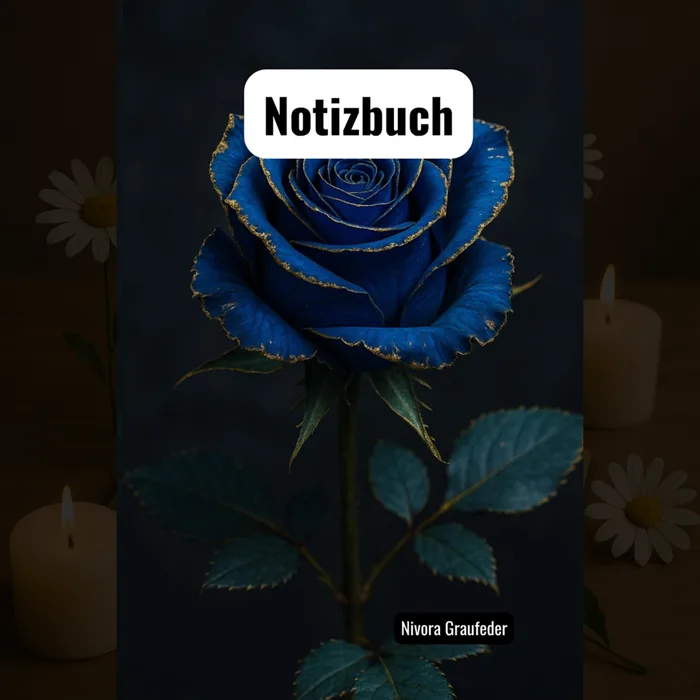
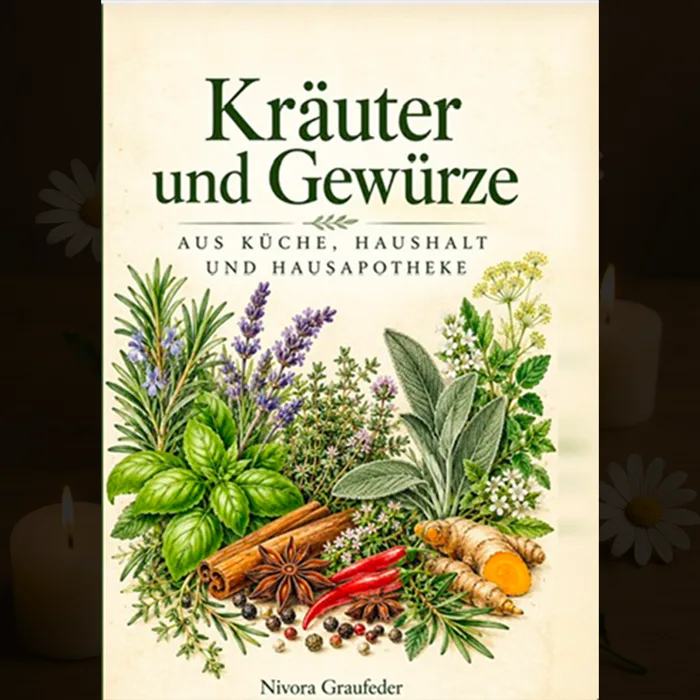
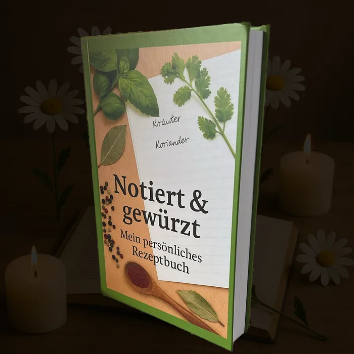

Notizbücher & Rezeptbücher
Seiten zum Festhalten eigener Gedanken, Ideen und Lieblingsrezepte laden dazu ein, Persönliches aufzuschreiben und zu bewahren.
Bücher, die Raum geben für Kreativität, Erinnerungen und alles, was im Alltag einen festen Platz finden soll.
Notizbücher
Raum für Gedanken, Ideen und Notizen, die festgehalten und immer wieder neu entdeckt werden können …

Ideenimperium: Jeder Strich ein neuer Anfang
Für all die Gedanken, die bleiben sollen, braucht es manchmal nur eine freie Seite. In diesem Notizbuch finden Ideen, Pläne, Skizzen und kleine Einfälle ihren Platz. Jede Seite lädt dazu ein, loszuschreiben, weiterzudenken und aus einem einzelnen Strich vielleicht den Anfang von etwas Größerem zu machen.
Mehr erfahren →
Ideenimperium: Jeder Strich ein neuer Anfang (Ausgabe 2)
Einige Gedanken entstehen leise und entwickeln sich erst mit der Zeit. Dieses Notizbuch bietet den passenden Raum, um Gedanken festzuhalten, Pläne zu strukturieren, Skizzen auszuprobieren und Einfälle wachsen zu lassen – bis aus ersten Ansätzen etwas ganz Eigenes entsteht.
Mehr erfahren →
Tiefsee-Geheimnisse: Ein Ort für Ihre Gedanken und Träume
Wie ein Blick unter die Wasseroberfläche öffnet dieses Notizbuch einen ruhigen Raum für alles, was festgehalten werden möchte. Träume, Erinnerungen, Ideen und kleine Einfälle finden hier ihren Platz. Jede Seite lädt dazu ein, abzutauchen, Gedanken zu sammeln und aus stillen Momenten etwas Eigenes entstehen zu lassen.
Mehr erfahren →Rezeptbücher
Platz für Lieblingsgerichte, Küchenwissen und kleine Entdeckungen rund um Kräuter und Gewürze …

50 Kräuter und Gewürze – und alles, was man mit ihnen machen kann
Ich finde es spannend zu sehen, wie vielseitig Kräuter und Gewürze eigentlich sein können. Dieses Buch lädt dazu ein, 50 davon genauer kennenzulernen, neue Verwendungsmöglichkeiten zu entdecken und vielleicht auch das eine oder andere selbst auszuprobieren – egal ob in der Küche, beim Anbau oder mit einem der passenden Rezepte.
Mehr erfahren →
Notiert & Gewürzt – Mein persönliches Rezeptbuch
Dieses Rezeptbuch bietet Raum, eigene Lieblingsgerichte festzuhalten und persönliche Küchenerinnerungen zu bewahren. Jede Seite lädt dazu ein, Rezepte, Ideen und Erfahrungen dauerhaft aufzuschreiben und immer wieder neu zu entdecken.
Mehr erfahren →